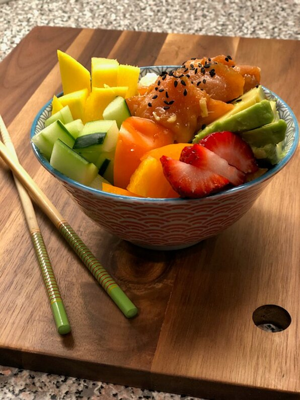

Smoked Salmon Poke Bowl

Sweet and smokey goodness in one bowl
The best thing about making poke bowls is the ability to customize toppings around the main ingredient. In this case, it's smoked salmon. The smoked salmon is marinated with six ingredients for only 30 to 45 minutes, so you'll have dinner ready in a jiff.
Ingredients
- 1/4 cup soy sauce
- 3 green onions, sliced
- 1 tablespoon black sesame oil
- 1 tablespoon rice vinegar
- 1 teaspoon grated ginger
- 1/2 teaspoon garlic, minced
- 12 ounces smoked salmon, chopped
- 2 cups cooked brown rice
- 1/4 cup diced mango
- 1/4 cup diced cucumber
- 1/4 cup sliced strawberries
- 1 teaspoon black sesame seeds
Steps
- Combine soy sauce, green onions, sesame oil, rice vinegar, ginger, and garlic in a bowl. Mix until thoroughly combined. Add salmon and marinate in the refrigerator for 30 minutes to 1 hour.
- Divide brown rice among 4 serving bowls. Top with salmon, mango, cucumber, avocado, and strawberries. Sprinkle black sesame seeds on top.
from allrecipes.com